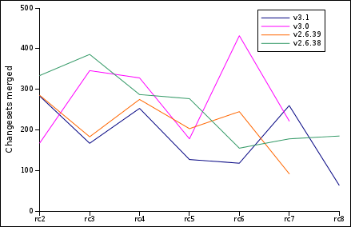

A look at the 3.1 development cycle
The most active developers in the 3.1 cycle were:
Most active 3.1 developers
By changesets Takashi Iwai 140 1.7% Mark Brown 137 1.6% Mauro Carvalho Chehab 127 1.5% Roland Vossen 108 1.3% Russell King 106 1.3% Al Viro 105 1.2% Arend van Spriel 105 1.2% Joe Perches 93 1.1% Rafał Miłecki 87 1.0% Alan Cox 85 1.0% Axel Lin 80 0.9% Christoph Hellwig 78 0.9% Jon Medhurst 75 0.9% Ben Skeggs 68 0.8% Neil Brown 68 0.8% Wey-Yi Guy 66 0.8% Kuninori Morimoto 65 0.8% David S. Miller 63 0.7% Shawn Guo 61 0.7% Jonathan Cameron 59 0.7%
By changed lines Greg Kroah-Hartman 121512 14.8% Ralph Metzler 26043 3.2% Takashi Iwai 24919 3.0% Vladislav Zolotarov 24109 2.9% Nicholas Bellinger 22825 2.8% Roland Vossen 20472 2.5% Alan Cox 20429 2.5% Oliver Endriss 19472 2.4% matt mooney 16804 2.0% Krishna Gudipati 15920 1.9% Arend van Spriel 15659 1.9% Chaoming Li 15319 1.9% Dominik Brodowski 15251 1.9% Mauro Carvalho Chehab 12974 1.6% Jonas Bonn 11112 1.4% Mark Brown 10820 1.3% Kamil Debski 9311 1.1% Andy Grover 6753 0.8% Yaniv Rosner 6526 0.8% Joe Perches 6502 0.8%
Media drivers would appear to dominate the listings on the "by changesets" side. Takashi Iwai continues to be incredibly productive in the area of audio drivers; Mark Brown, too, works mostly in the audio area. Mauro Carvalho Chehab is the Video4Linux2 maintainer; all of his patches fall within that tree this time around. Roland Vossen, instead, contributed a large number of changes to the Broadcom wireless network driver. Russell King not only serves as the top-level ARM maintainer; he also made a number of changes in that tree this time.
Greg Kroah-Hartman has, once again, been the top changer of lines in the kernel. Once again, the bulk of his work is in the staging tree; this time, though, he got there by deleting a number of drivers that either were not going to make it into the mainline or were on their way out. Ralph Metzler only contributed five patches, but three of them added new drivers to the Video4Linux2 tree. Takashi Iwai shows at the top of both columns for his sound driver work, Vladislav Zolotarov contributed a single patch with a bunch of new Broadcom firmware, and Nicholas Bellinger continues to enhance the SCSI target code.
Of the 182 employers identified as contributing to the 3.1 kernel, the most active were:
Most active 3.0 employers
By changesets (None) 1111 13.1% Red Hat 882 10.4% (Unknown) 749 8.8% Intel 616 7.3% Broadcom 428 5.1% Novell 380 4.5% IBM 301 3.6% Texas Instruments 276 3.3% (Consultant) 223 2.6% Freescale 182 2.2% Linaro 170 2.0% Samsung 162 1.9% 150 1.8% Wolfson Microelectronics 142 1.7% Fujitsu 131 1.5% Renesas Electronics 100 1.2% Oracle 82 1.0% MiTAC 80 0.9% Nokia 79 0.9% (Academia) 73 0.9%
By lines changed Novell 162583 19.8% (None) 90119 11.0% Broadcom 76810 9.4% Red Hat 58262 7.1% Intel 43505 5.3% (Unknown) 27109 3.3% Metzler Brothers Systementwicklung GbR 23681 2.9% Samsung 23238 2.8% Rising Tide Systems 23090 2.8% IBM 22231 2.7% Texas Instruments 21130 2.6% Freescale 17270 2.1% Brocade 16587 2.0% Realsil Microelectronics 15868 1.9% Wolfson Microelectronics 14004 1.7% (Consultant) 13710 1.7% South Pole AB 12087 1.5% Linaro 11129 1.4% Oracle 9390 1.1% Nokia 7450 0.9%
Broadcom's extensive work to move its wireless driver out of staging caused it to move to a higher than usual position on both lists. Also notable is the continued slow climb by companies like Texas Instruments and Samsung; Nokia, instead, appears to be about to fall out of the top 20. The handling of Linaro deserves an explanation: contributions by Linaro assignees is normally credited back to their home companies. Nonetheless, Linaro makes an appearance on its own here as the result of the work of an increasing number of engineers employed by the organization itself.
Finally, here is a plot showing the number of changesets merged for each stabilization release (those after -rc1) for the last few development cycles:

The dark blue line represents the 3.1 development cycle; as might be
expected, the number of changesets merged drops significantly after
3.1-rc4, which is when the kernel.org outage started. Both 3.1-rc5 and
3.1-rc6 were smaller than usual releases, but 3.1-rc7 has made up for some
of the slowdown. It would appear that the subsystem maintainers affected
by the outage have mostly managed to find new places to host their trees.
The kernel development show manages to go on, even with the loss of its
primary repository hosting site.
| Index entries for this article | |
|---|---|
| Kernel | Releases/3.1 |